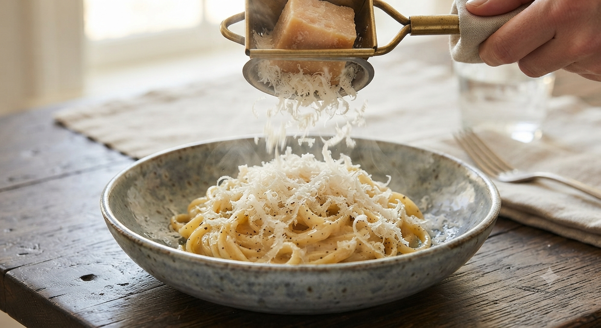
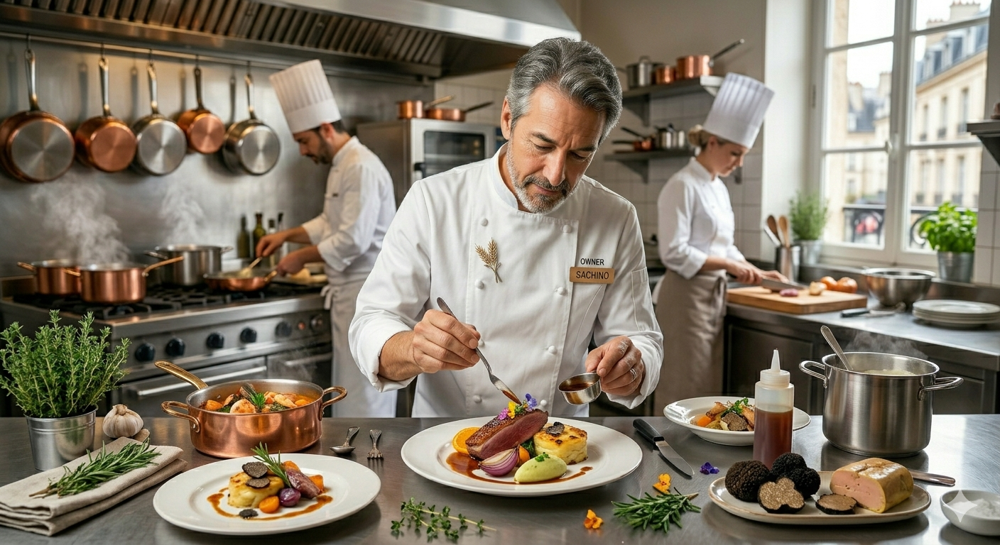

薪窯から溢れる香ばしい薫り、黒トリュフの深い吐息。
盛岡・南大通で、記憶に刻まれる一枚を。

北海道産十勝ブラウンマッシュルームや、希少な黒トリュフ。そして地元盛岡の新鮮な野菜。伝統的なレシピを軸にしながら、この土地でしか出逢えない味を追求しています。
「4種のチーズのクワトロフォルマッジ」では、お客様の目の前でチーズを削り、地元の「トチ蜜」を添えて。ライブ感溢れる演出が、お食事をより特別な体験に変えます。
外観も内装もシンプルでおしゃれにまとめられており、居心地の良い空間。一皿一皿がとても美しく、目移りしてしまいます。ピザは生地も美味しくちょうど良い大きさ。パスタは見た目と香りだけでもワクワクさせてくれますし、味も間違いなしです。シェフの方がとても気さくで、退店の際にはわざわざ直接挨拶をしてくれました。
ピザ生地モチモチで久しぶりに美味しいピザに出会えました。パスタももっちりしており、ハラペーニョとゴルゴンゾーラの組み合わせは絶品。お食事の味の満足度が高く、来て良かったと思いました。また、退店の際に笑顔が可愛らしいシェフの方が外まで見送ってくださり、心まで穏やかになりました。
珍しいソースのパスタがあります。黒トリュフと十勝ブラウンマッシュルームのクリームソースパスタを頂きましたが、とても美味しかったです。人気のお店のようで結構混んでいます。帰りには、シェフがわざわざ外まで出てきて挨拶してくれますよ！
味も良く、落ち着いた良い感じの店。お値段はまあまあするので、気軽に行くというよりは「ご褒美」といった感じです。一人ランチよりは、デートには良いんじゃないかなぁと思いました。

都内有名店で磨いた技術を携え、2020年。故郷である盛岡に「Tikka」を構えました。店名の由来は、私の母の愛称。家族のような温かさと、本格イタリアンの上品さが共鳴する、そんな場所でありたいと願っています。
盛岡劇場・江南義塾のすぐ近くに位置するTikkaから、舞台やコンサートを愛する皆様へ贈る特別なメニュー企画が始動します。
「観劇前に少しだけ食べたい」「終演後にゆっくり感想を語り合いたい」というお声にお応えします。チケット半券特典や、劇場帰り限定特別オファーも準備中！
※詳細なスタート時期やメニュー内容は、LINEおよび公式Instagramにて順次公開いたします。
ご予約またはお問い合わせ時に「LPを見た」とお伝えください。
食後のひとときをゆっくりとお過ごしいただくため、
コーヒーまたは紅茶をサービスさせていただきます。